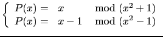
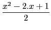

suivant: Polynôme cyclotomique : cyclotomic
monter: Arithmétique des polynômes
précédent: Résolution polynômiale de au+bv=c
Table des matières
Index
Les restes chinois : chinrem
chinrem a comme argument deux listes ayant chacun comme
composantes deux polynômes éventuellement donnés par la liste de leurs
coefficients par ordre décroissant.
chinrem renvoie une liste de composantes deux polynômes.
chinrem([A,R],[B,Q]) renvoie la liste des polynômes
P et S vérifiant :
S = R.Q, P = A(mod R), P = B(mod Q)
Il existe toujours une solution
P si R et Q sont premiers entre eux, et toutes les
solutions sont congrues modulo S=R*Q
Trouver les solutions P(x) de :

On tape :
chinrem([[1,0],[1,0,1]],[[1,-1],[1,0,-1]])
On obtient :
[[1/-2,1,1/-2],[1,0,0,0,-1]]
ou on tape :
chinrem([x,x^2+1],[x-1,x^2-1])
On obtient :
[1/-2*x^2+x+1/-2,x^4-1]
donc
P(x) = -  ( mod x4 - 1)
Autre exemple :
On tape :
chinrem([[1,2],[1,0,1]],[[1,1],[1,1,1]])
On obtient :
[[-1,-1,0,1],[1,1,2,1,1]]
ou on tape :
chinrem([x+2,x^2+1],[x+1,x^2+x+1])
On obtient :
[-x^3-x^2+1,x^4+x^3+2*x^2+x+1]
Documentation de giac écrite par Renée De Graeve